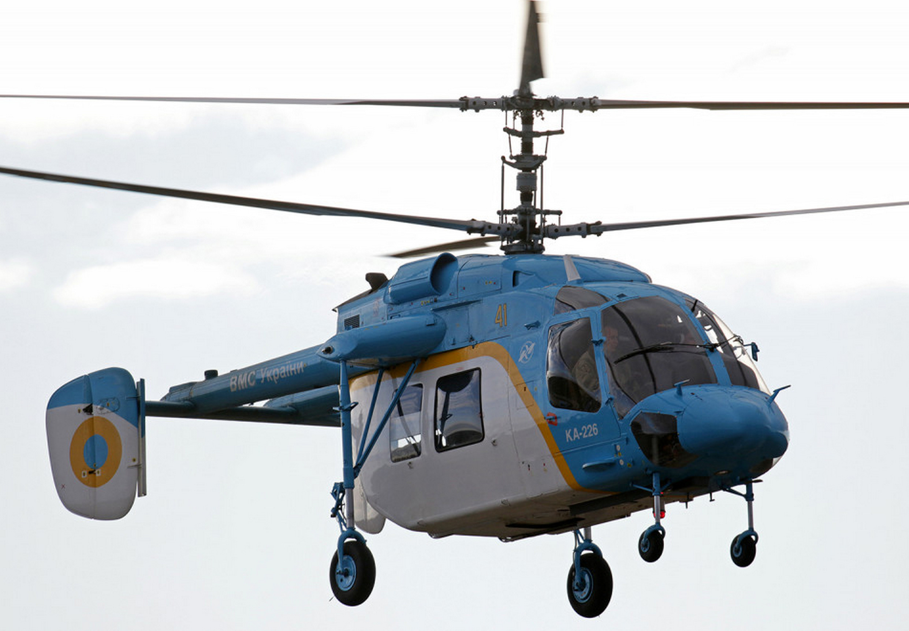
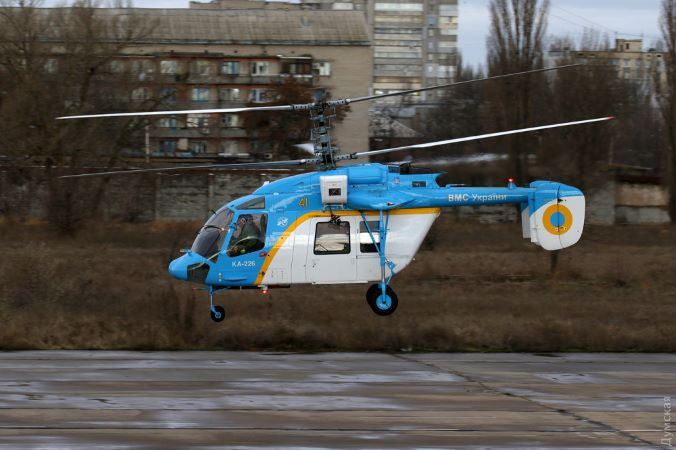

Ка-226
Ка-226 — багатоцільовий вертоліт, розроблений у ДКБ Камова. Є модернізацією вертольоту Ка-26. Серійно виробляється на АТ "Камов" (Ухтомський вертолітний завод) та на авіаційному заводі у Кумертау.
Конструкторське бюро «Камов» ще в 1990 почало розробку Ка-226, за основу взяли глибоку модифікацію Ка-26 і Ка-126. Завдання для нової машини ставилися такі ж, як і попередникам, але додатково в пріоритеті була можливість застосовувати вертоліт в роботах, що вимагають обов'язкової наявності двох двигунів для гарантії безпеки польотів.
При конструюванні Ка-226 були збережено більшість конструктивно-компонувальних рішень попередника Ка-26. Зміни, в основному, полягали в установці двох сучасних газотурбінних двигунів, нових несучих гвинтів з напівтвердим торсійним кріпленням лопатей і розміщенні нового обладнання.
Фюзеляж вертольота складається з кабіни пілота, центрального відсіку, двох хвостових балок та оперення, що включає в себе нерухомий стабілізатор з двома рознесеними кілями з кермом напрямку. При створенні фюзеляжу застосовувалися елементи з алюмінієвих сплавів і стільникові панелі зі склопластику. Також зі склопластику зроблені хвостові балки, оперення і панелі транспортної кабіни.
Силова установка вертольота розміщується над центральним силовим відсіком, в її склад входить редуктор ВР-126 і два турбогвинтові двигуни модульної конструкції «Аллісон». Місткість чотирьох паливних баків становить 770 літрів. Тривалість польоту з основними баками триває близько 4,34 години, а з додатковими - до 6,45 годин. Ресурс двигуна становить близько 3500 годин.
Ка-226 має повну аеродинамічну симетрію і виключно простий в пілотуванні, внаслідок відсутності кермового гвинта вертоліт здатний безпечно маневрувати поблизу перешкод і має невисоку чутливістю до сили і напряму вітру. Плаский розворот машина здатна виконувати як під час зависання, так і в горизонтальному польоті, при цьому висота польоту залишається незмінною. Розвороти вправо і вліво Ка-226 також робить без зміни висоти, що недоступно вертольотам з кермовим гвинтом. Дані здібності маневрування співвісного вертольота особливо важливі при виконанні, наприклад, рятувальних робіт при підвищених температурах повітря, на великих барометричних висотах в горах, в умовах, коли відсутні надлишки потужності силової установки.
